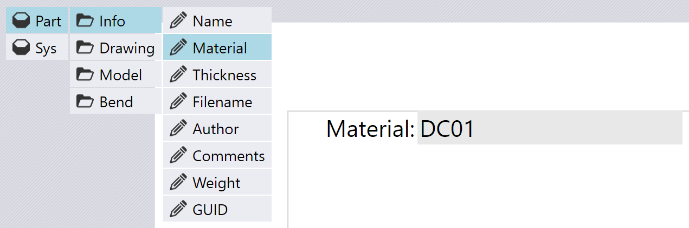
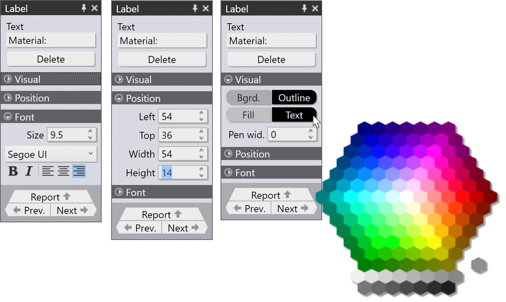
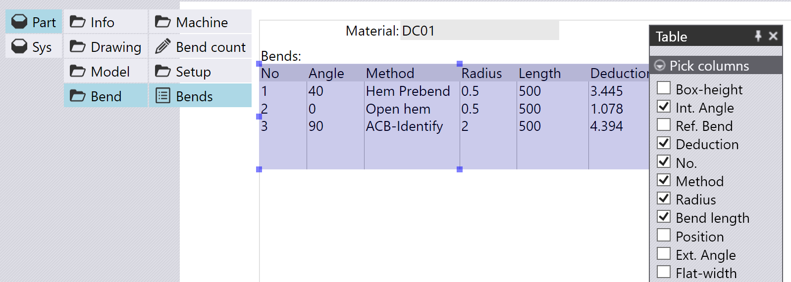
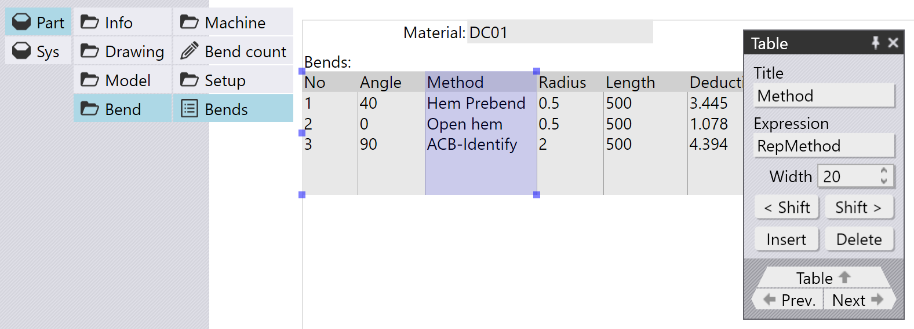

Pole, obrázky a tabulky
Kliknutím na datové zdroje se tyto otevřou a zobrazí se další úrovně klikatelných tlačítek. Tato lze použít k přidání polí, obrázků a tabulek do reportu.
Přidání pole
Pole je jednoduché číselné nebo textové zobrazení z reportu. Například kliknutím na Díl > Informace > Název můžete do reportu vložit pole, které zobrazuje materiál dílu:

Když to uděláte, TecZone Bend do reportu ve skutečnosti přidá dvě položky – Field zobrazující hodnotu a Label vlevo od tohoto pole. Nastavení štítku nebo pole můžete upravit pouhým kliknutím na něj.
Úprava štítku
Po kliknutí na právě přidaný štítek se zobrazí panel, ve kterém můžete upravit různá nastavení tohoto štítku. Štítek se také zvýrazní a kolem něj se zobrazí úchyty pro změnu velikosti, které vám umožní změnit jeho velikost přetažením kteréhokoli z nich. Můžete také kliknout přímo na štítek a přetáhnout jej na jiné místo. Při přetahování za účelem přesunutí nebo změny velikosti položky se automaticky zobrazují různé indikátory uchycení, které usnadňují přesné zarovnání tohoto štítku s ostatními položkami, které již jsou v reportu.

Panel pro úpravy štítku (a většiny dalších položek reportu) obsahuje velké množství nastavení, pomocí kterých lze doladit každý aspekt vizuálního zobrazení. Můžete je zobrazit otevřením různých rozbalitelných skupin:

Obrázek vpravo nahoře ukazuje použití nástroje pro výběr barvy k nastavení barvy textu štítku.
Vložení obrázku
picture v reportu je označen ikonou fotoaparátu (na rozdíl od ikony tužky používané pro jednoduchá pole). Například kliknutím na Díl > Model > Obrázek můžete vložit obrázek 3D modelu dílu:

Obrázek výše ukazuje vložený obrázek, který je následně upravován kliknutím na něj. Panel pro obrázek zobrazuje některá nastavení používaná k ovládání obrázku. Přesná nastavení se mohou lišit v závislosti na konkrétním vloženém obrázku. V tomto případě se nastavení DPI používá k ovládání rozlišení vykreslení obrázku (vyšší hodnoty budou vypadat lépe, ale způsobí, že konečná velikost reportu bude větší). Nastavení No 3D PDF se používá k zakázání generování souborů 3D PDF[1].
Pokud vložíte obrázek 2D výkresu (plochý), možnosti obrázku se liší, jak je vidět na obrázku níže:

Nastavení zde ovládá šířku čáry použité pro obrysy a rozměry. K dispozici jsou nastavení pro zobrazení čísel pořadí ohýbání a pro ovládání toho, zda je uzavřená kontura dílu vyplněná.
Vložení tabulky
Tabulku můžete vložit do reportu výběrem jedné z položek, které zobrazují ikonu tabulky. Například pokud tabulka Díl > Ohyb > Ohyby slouží k zobrazení některých informací o všech procesech ohýbání v daném dílu:

Sekce Pick Columns slouží k výběru sloupců, které se zobrazí v tabulce (ze všech sloupců dostupných pro tato tabulková data). Další atributy každého sloupce můžete upravit kliknutím na odkaz pro navigaci Column v dolní části panelu table:

Tím se otevře Editor sloupců, kde lze upravit atributy sloupce, jak je vidět níže:

Pole Title slouží k nastavení zobrazeného názvu sloupce, zatímco pole Expression obsahuje interní data TecZone Bend, která se v tomto sloupci zobrazují. Pomocí tlačítek ui:EGTag.ShiftLeft[< Shift] a Shift > můžete tento sloupec posunout v pořadí doleva nebo doprava a tlačítka Insert a Delete použít k vložení nových sloupců nebo k odstranění vybraného sloupce.